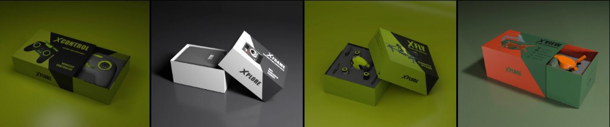

UPC ESEIAAT · MODELAT 3D & CMF
Xplore
Presentació de producte per a unes ulleres de drons FPV explorant modelat de superfícies, il·luminació i acabats CMF.
Institució
UPC ESEIAAT
Disciplina
Modelat 3D & CMF
Producte
Ulleres de Dron FPV
Eines
3ds Max · SolidWorks
Explorar la interacció entre carcassa tècnica mat, botons ergonòmics d'alt contrast i ferratges metàl·lics mitjançant renderitzat fotorrealista.
El treball posa el focus en la comunicació visual del producte: definició precisa de línies de partició, comandaments tàctils identificables sense mirar i coherència cromàtica en condicions d'il·luminació d'estudi.

Estudi complet de representació virtual per a electrònica de consum, cuidant materials compostos, escumes ergonòmiques i reflexos controlats.
Veure projecte a Behance